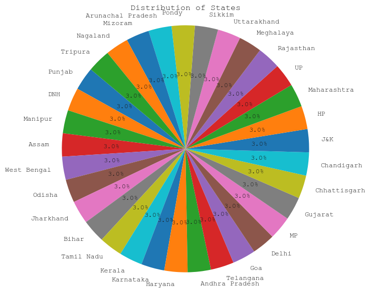
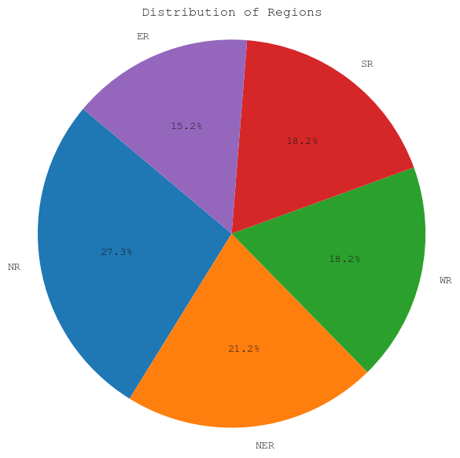
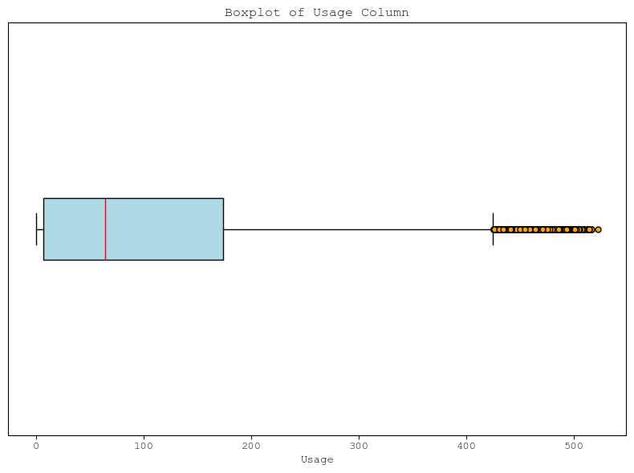
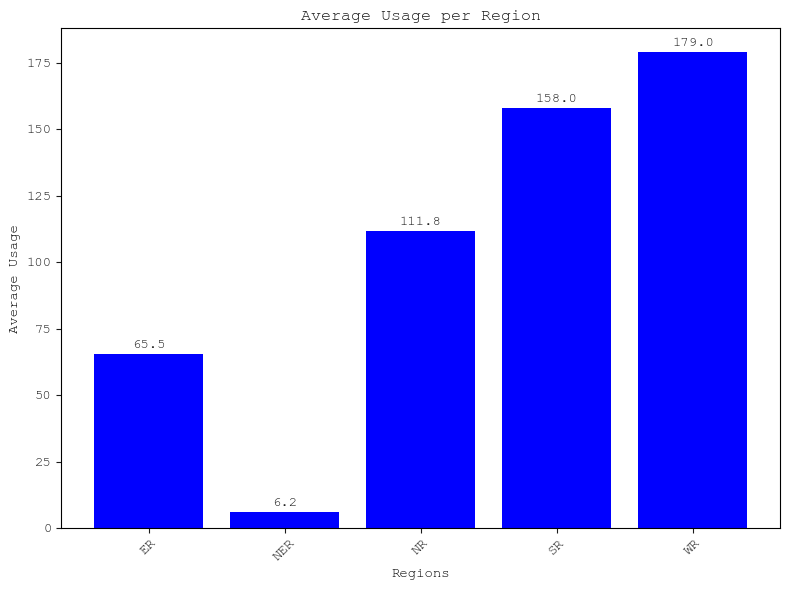
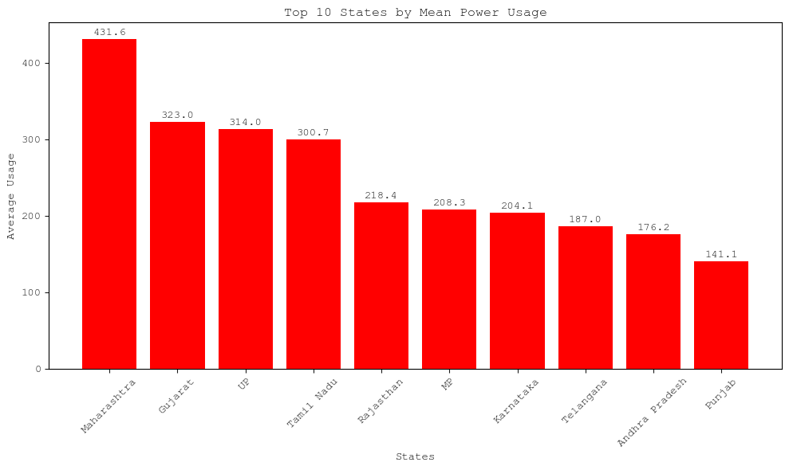
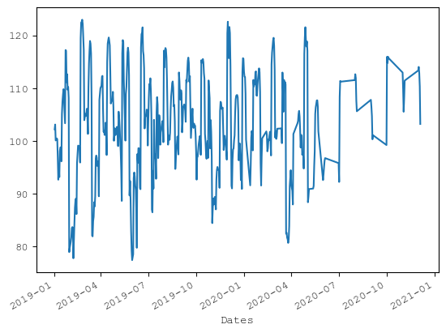
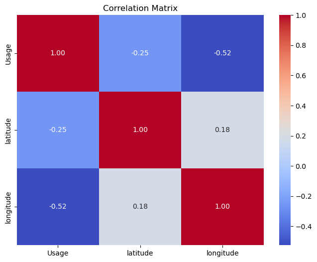

| States | Regions | latitude | longitude | Dates | Usage | |
|---|---|---|---|---|---|---|
| 0 | Punjab | NR | 31.519974 | 75.980003 | 02/01/2019 00:00:00 | 119.9 |
| 1 | Haryana | NR | 28.450006 | 77.019991 | 02/01/2019 00:00:00 | 130.3 |
| 2 | Rajasthan | NR | 26.449999 | 74.639981 | 02/01/2019 00:00:00 | 234.1 |
| 3 | Delhi | NR | 28.669993 | 77.230004 | 02/01/2019 00:00:00 | 85.8 |
| 4 | UP | NR | 27.599981 | 78.050006 | 02/01/2019 00:00:00 | 313.9 |
| 5 | Uttarakhand | NR | 30.320409 | 78.050006 | 02/01/2019 00:00:00 | 40.7 |
| 6 | HP | NR | 31.100025 | 77.166597 | 02/01/2019 00:00:00 | 30.0 |
| 7 | J&K | NR | 33.450000 | 76.240000 | 02/01/2019 00:00:00 | 52.5 |
| 8 | Chandigarh | NR | 30.719997 | 76.780006 | 02/01/2019 00:00:00 | 5.0 |
| 9 | Chhattisgarh | WR | 22.090420 | 82.159987 | 02/01/2019 00:00:00 | 78.7 |
IDS Writing Assignment
The dataset contains electricity usage data for various Indian states, recorded across different dates. Each row represents a state’s usage at a specific timestamp, along with its geographical coordinates (latitude and longitude) and its corresponding region (like NR for North Region). The dataset includes 16,599 entries across 6 columns. The Usage column holds the power consumption values, while the Dates column indicates the timestamp in DD/MM/YYYY HH:MM:SS format.
Data is in the form of a time series for a period of 17 months beginning from 2nd Jan 2019 till 23rd May 2020.
Below is the first 10 samples from the dataset.
Number of Null Values in these columns:
States 0
Regions 0
latitude 0
longitude 0
Dates 0
Usage 0
dtype: int64Univariate Analysis
Lets look at data distribution across all the 33 states present in the dataset

Now, lets look at the data distribution across the 5 regions

Now lets focus on how many states are present in each region

Following are stats for the Usage columns in the dataset
count 16587.000000
mean 103.072539
std 116.056017
min 0.300000
25% 6.700000
50% 64.600000
75% 174.000000
max 522.100000
Name: Usage, dtype: float64
Here is the date distribution which the dataset follows, important note here is that not all days are included in the time period mentioned, there are some days for which no data is logged
Data start date: 2019-01-02 00:00:00
Data ends end: 2020-12-05 00:00:00
Total days for which data is logged: 703 days 00:00:00Bivariate Analysis
Now lets focus on average usage according to regions

Next, we will see on average power usage for each state
States
Maharashtra 431.570179
Gujarat 323.039563
UP 314.036382
Tamil Nadu 300.738569
Rajasthan 218.443340
MP 208.283101
Karnataka 204.106759
Telangana 187.008549
Andhra Pradesh 176.151889
Punjab 141.145527
West Bengal 138.708151
Haryana 138.333598
Chhattisgarh 83.877137
Delhi 83.380716
Bihar 83.159443
Odisha 80.464612
Kerala 72.192445
J&K 44.264016
Uttarakhand 36.161155
HP 26.568191
Assam 24.960040
Jharkhand 23.842545
DNH 16.430616
Goa 11.093241
Pondy 7.473108
Meghalaya 5.646813
Chandigarh 4.141551
Tripura 4.089022
Manipur 2.494632
Nagaland 2.163273
Arunachal Pradesh 2.110579
Mizoram 1.707585
Sikkim 1.289044
Name: Usage, dtype: float64Lets look at the mean usage of each state with thier locations on the map
Let focus on top 10 states which consume maximum energy

Now lets look at India as a whole and see how the mean usage varied throughtout the entire period

Lets now look at the correlation matrix for usage latitude and longitude

Now let us look at if there are any outliers present in the usage column, and if then in which states
States Usage
5424 Maharashtra 522.1
1662 Maharashtra 516.4
1695 Maharashtra 515.8
5391 Maharashtra 513.9
5358 Maharashtra 513.6
... ... ...
15679 UP 425.6
3873 Maharashtra 425.5
13575 Maharashtra 425.1
7066 UP 425.1
6744 Maharashtra 425.1
[314 rows x 2 columns]
['Maharashtra' 'UP']From the above analysis we can cleary see that there exist around 314 outliers, but the interesting point is that they exist only in Maharashtra and UP, and the outlier values are high. this can due to fact that the population is very high in both these states, thus having high values of usage is quite justified compared to the other values
Monthly Usage Statistics (Grouped by State and Month):
count 792.000000
mean 103.845091
std 115.037608
min 1.031818
25% 7.216190
50% 70.458333
75% 176.917403
max 488.940000
Name: Usage, dtype: float64